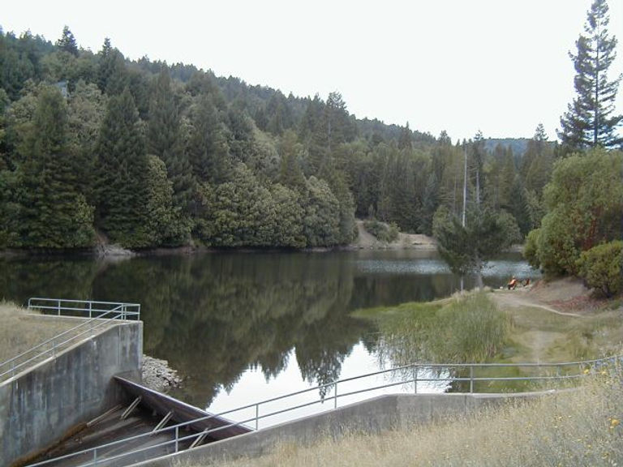
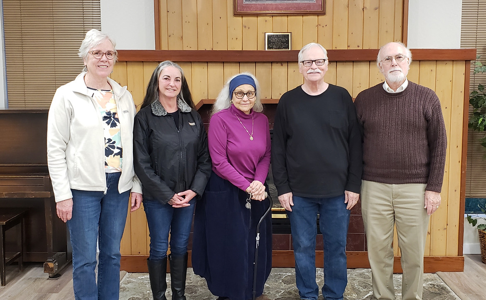

Your field guide to Brooktrails
Between the Water
and the Redwoods,
One forest community. One clear path to the services, decisions, and places that shape life here.

Choose your trail
What draws you in?
Choose the invitation that feels closest to why you came. Each one opens a focused hub with a useful next move, not another municipal maze.
Manage water & sewer
Pay a bill, review water quality, conserve water, or find utility forms.
Enter the utility desk →Enjoy parks & trails
Explore Redwood Park, maps, rental resources, and trail stewardship.
Open the field guide →Plan a project
Understand development review before grading, tree cutting, or construction.
Map the approval path →Follow your district
Meet the Board, find meetings, review budgets, policies, audits, and public records.
Enter the civic desk →Find forms & documents
Search the retained public library of reports, ordinances, applications, and plans.
Search by what you need →Discover what is beneath the canopy
Follow the water, meet the landscape, and uncover how Brooktrails became Brooktrails.
Choose a thread →The landscape is the infrastructure
Everything starts with this place.
Brooktrails sits northwest of Willits in northern Mendocino County. The district helps protect essential infrastructure, local recreation, and roughly 2,500 acres dedicated as conservation land in Brooktrails Redwood Park.
Step into Brooktrails history →See behind the decisions
Local government, without the fog.
Find the next meeting, the people responsible, and the public records behind decisions without digging through a conventional municipal maze.
